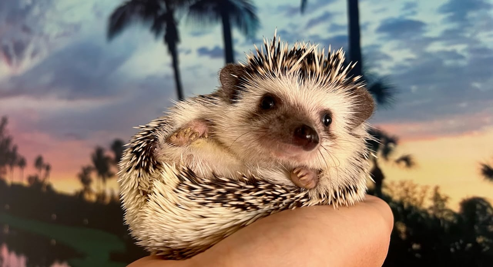

DB Pooper
DB is an African pygmy hedgehog with pinto coloring. The fur on her face was darker when she was a baby, especially around her eyes, and I thought she looked like the police sketch of DB Cooper with his sunglasses on, hence the name. Nobody has any idea what DB stands for.
Likes
- Nighttime
- Melon (watermelon, cantaloupe, honeydew…)
- The couch at our first apartment
- The balcony at my parents’ condo
- Gentle rubs up the bridge of her nose or behind her ears
- New smells
Dislikes
- Being woken up
- Loud noises
- Sibilance / consonance
- Sudden movements
- Getting her nails trimmed
- New people
DB’s gotcha day is May 15, 2022. She was estimated to be eight weeks old when she came home, so I made up her birthday to be March 13, 2022. She’s very clean and sticks to her routine! She wakes up a little bit after sunset, runs on her wheel, eats and drinks, goes to the bathroom, and repeats for about a half hour. Then she goes back to bed, and will wake up to do it all again once or twice more before sunrise, when she will go to sleep for the rest of the day.
The nails on DB’s paws curl inward and she needs them trimmed once a month. Otherwise they’ll dig into her paw pads and make it hurt to walk or run. But she doesn’t like it very much when this has to happen. DB had a hysterectomy on Valentine’s Day 2024 (!) to remove a little tumor in her uterus. She’s all better now, and has a cool scar underneath her tummy fur.
She will huff and puff and curl up into a ball when she’s nervous or angry. This might seem like it happens more often than not, but she will relax around people she’s met before. She will even wear a tiny friendship bracelet when she’s feeling fancy!